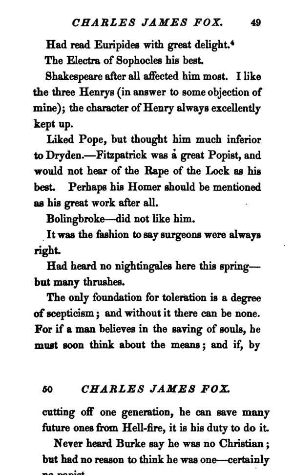

“A degree of scepticism” (pp. 49–50)
English: London 1859, p. 49 (scan) to p. 50 (scan), in the chapter “Charles James Fox”. Highlighted: Lecky’s quotation.

Had read Euripides with great delight.
The Electra of Sophocles his best.
Shakespeare after all affected him most. I like the three Henrys (in answer to some objection of mine); the character of Henry always excellently kept up.
Liked Pope, but thought him much inferior to Dryden.—Fitzpatrick was a great Popist, and would not hear of the Rape of the Lock as his best. Perhaps his Homer should be mentioned as his great work after all.
Bolingbroke—did not like him.
It was the fashion to say surgeons were always right.
Had heard no nightingales here this spring—but many thrushes.
The only foundation for toleration is a degree of scepticism; and without it there can be none. For if a man believes in the saving of souls, he must soon think about the means; and if, by cutting off one generation, he can save many future ones from Hell-fire, it is his duty to do it.
Never heard Burke say he was no Christian; but had no reason to think he was one—certainly no papist.
Backlinks
Every place in Rationalism in Europe that links to this page (generated automatically when the site is built).
- Chapter IV, Part II: note 6